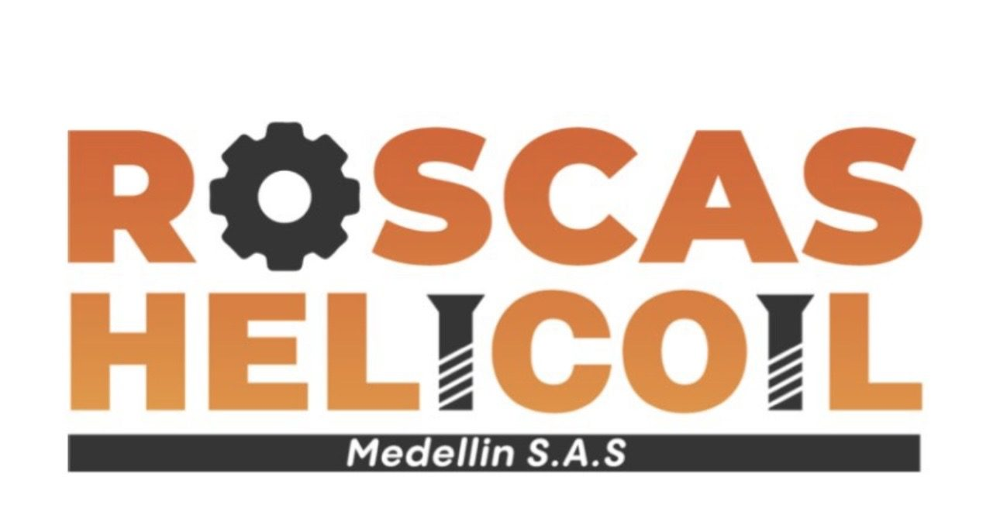
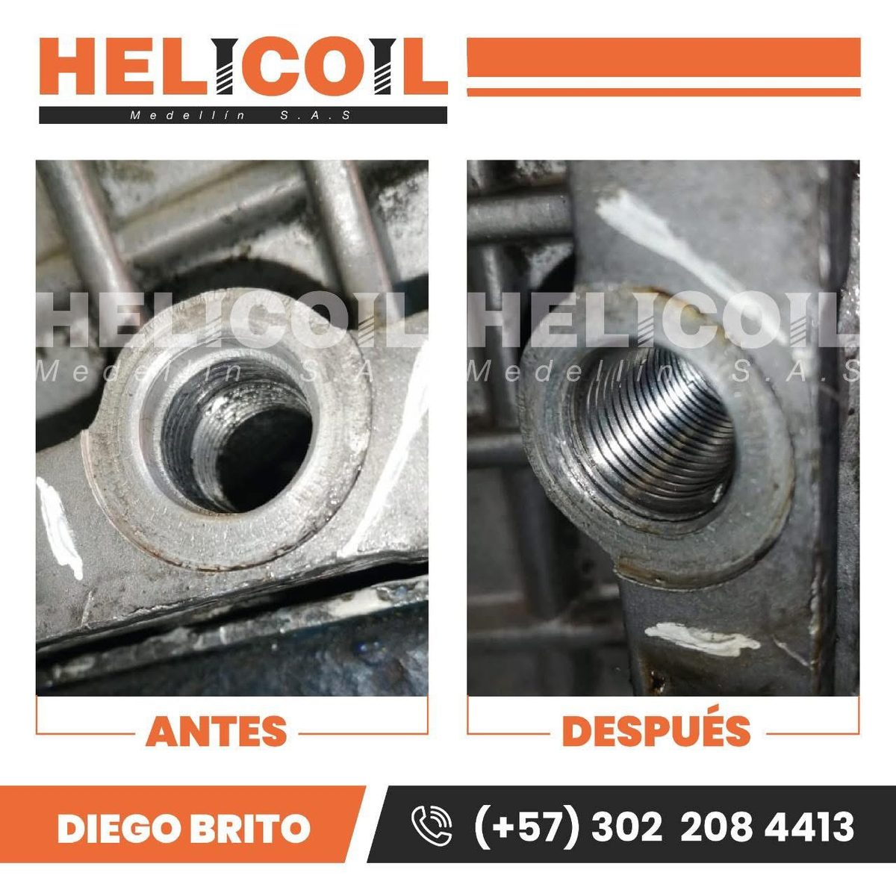
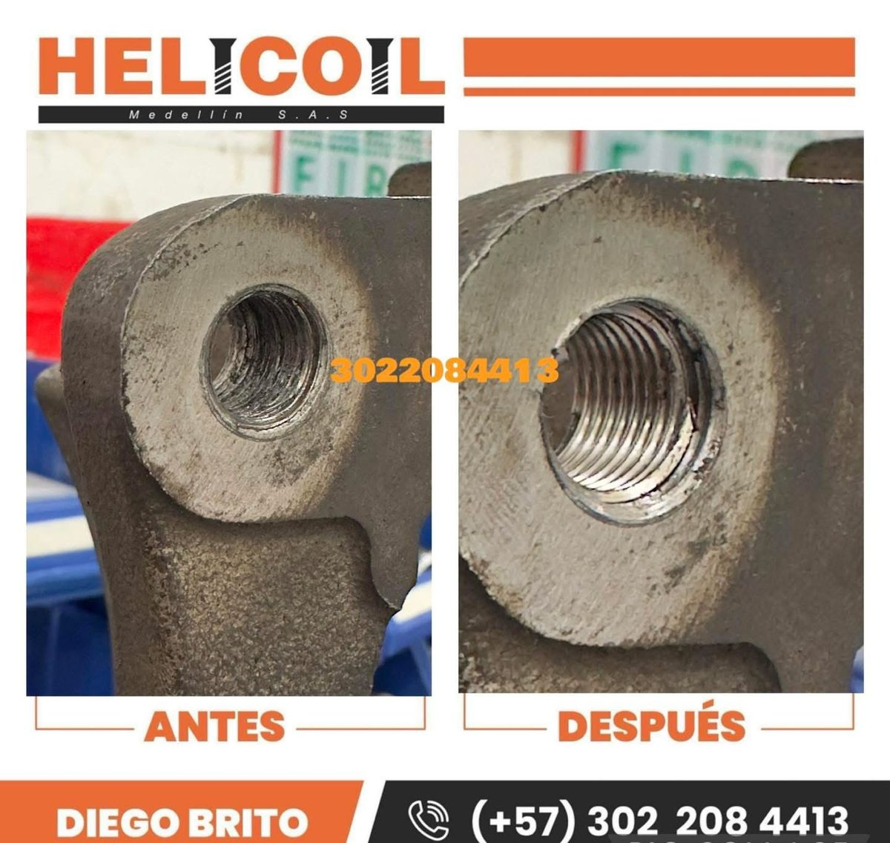
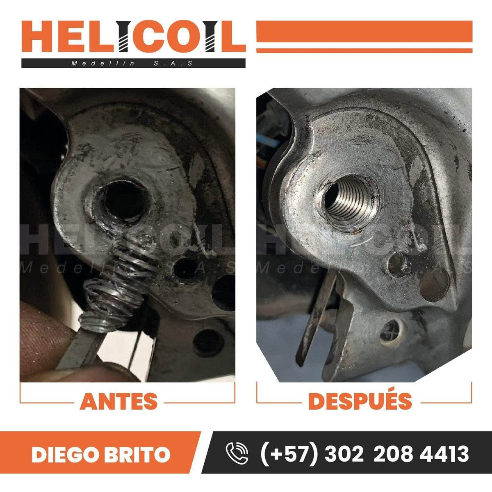
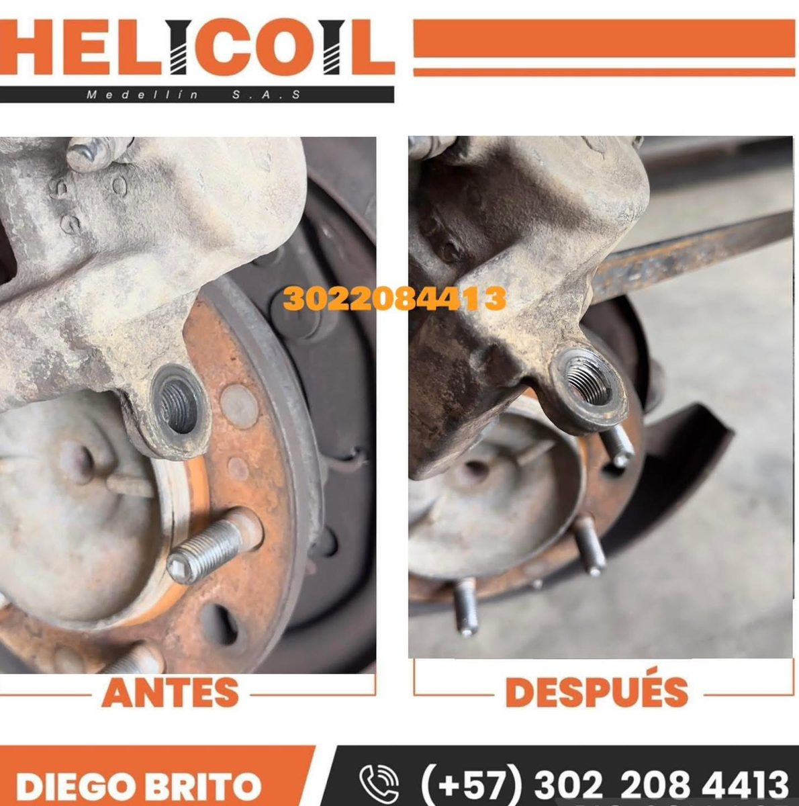
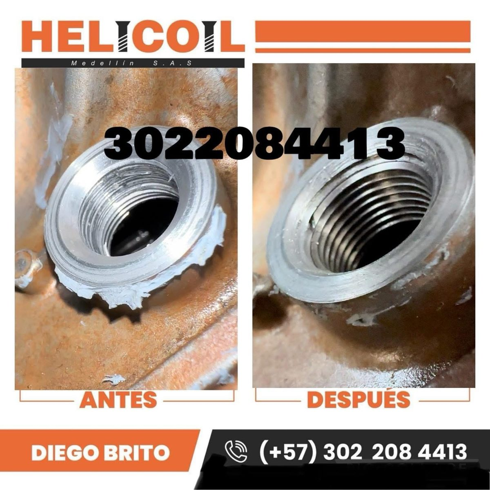
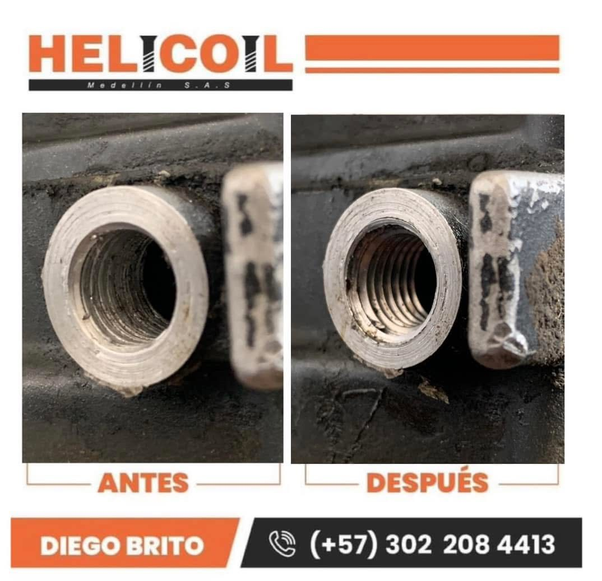

Reparación y reconstrucción de roscas
Roscas de cárter, tapón de aceite, drenaje, bujías, culatas, cabezotes, bloques, soportes, mordazas, aluminio, acero y hierro.

Recuperamos roscas dañadas, barridas, corridas o desgastadas y resolvemos extracciones complejas de tornillos, pernos y espárragos en carros, motos, camiones, motores diésel, maquinaria pesada y equipos industriales.

Atendemos el problema que realmente busca el cliente: rosca barrida, rosca dañada, rosca pasada o corrida, tornillo partido, espárrago roto o perno atascado. Cuando es técnicamente viable, recuperamos la pieza para evitar reemplazos innecesarios.
Roscas de cárter, tapón de aceite, drenaje, bujías, culatas, cabezotes, bloques, soportes, mordazas, aluminio, acero y hierro.
Extracción de tornillos quebrados, barridos, rodados, oxidados o atascados; también pernos y espárragos rotos.
Taller móvil para Medellín y Valle de Aburrá, con desplazamientos fuera del área metropolitana según ubicación y complejidad.
Aplicaciones en motores gasolina y diésel, culatas, bloques, bujías, cárteres, cajas, chasis y componentes mecánicos.
Reparación de roscas y extracción en maquinaria pesada, agrícola, equipos industriales, compresores, bombas y plantas eléctricas.
Insertos helicoidales, insertos roscados y kits para talleres en medidas M5, M6, M8, M10, M12 y otras referencias. Venta mayorista y minorista con envíos nacionales.
Resultados reales de reconstrucción de roscas y recuperación de componentes realizados por HELICOIL Medellín S.A.S.





HELICOIL Medellín S.A.S. inició operaciones en 2019. El equipo combina especialización en reconstrucción de roscas con experiencia práctica en mecánica, motores diésel y aplicaciones de alta exigencia.
Las cifras de reseñas deben actualizarse cuando cambien en Google.
Un ejemplo real de reconstrucción de roscas en maquinaria pesada. Cada trabajo se evalúa según material, acceso, daño y condiciones técnicas.
Medellín
Envigado
Sabaneta
Itagüí
La Estrella
Caldas
Bello
Copacabana
Girardota
Rionegro
Guarne
Marinilla
También evaluamos servicios fuera del Valle de Aburrá. El valor depende de la distancia y de la complejidad del trabajo.
En muchos casos sí. La viabilidad depende del material, diámetro, acceso y nivel de daño. Evaluamos fotos y ubicación antes de cotizar.
Sí. Atendemos tornillos quebrados, barridos, atascados, oxidados, pernos y espárragos, incluyendo casos donde la rosca también requiere recuperación.
Sí. Son aplicaciones frecuentes en motos, carros, camiones y motores. El procedimiento exacto depende de la medida y del estado de la pieza.
Sí. Vendemos insertos helicoidales y kits para talleres, al detal y por mayor, con envíos a diferentes ciudades de Colombia.
Sí. Atendemos Medellín y municipios del Valle de Aburrá y evaluamos desplazamientos a otras zonas de Antioquia.
Envíenos fotos del daño, tipo de vehículo o máquina y ubicación. Con esa información podemos evaluar el trabajo y cotizar mejor.
Enviar fotos por WhatsApp